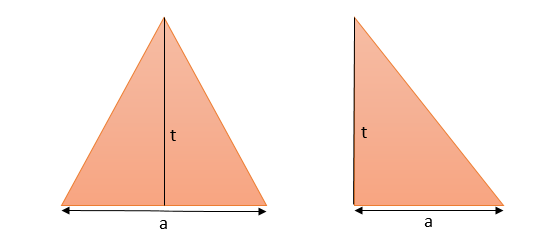

Luas Segitiga


Area of a Triangle
There are multiple different equations for calculating the area of a triangle, dependent on what information is known. Likely the most commonly known equation for calculating the area of a triangle involves its base, t, and height, a. The "base" refers to any side of the triangle where the height is represented by the length of the line segment drawn from the vertex opposite the base, to a point on the base that forms a perpendicular.